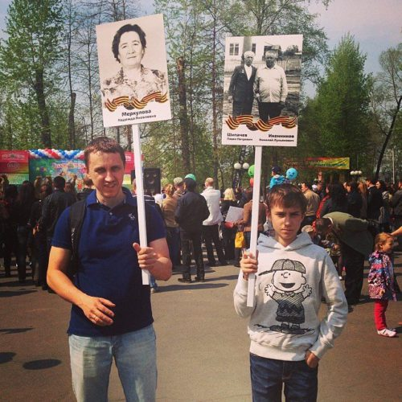

Кстати, неоднообразность сегодняшних плакатов мне понравилась. От штамповок бы пахнуло разнарядкой и волей сверху, а сегодняшие кавардак и бесстилие мне очень милы. «Бессмертный полк» в Кемерове вышел поистине народным гулянием, каковым и должен быть.

Такие встречи важны ещё и потому, что показывают, что, кроме меня и тебя, есть и другие адекватные и неравнодушные люди. Противотанковому ежу понятно, что кто-то хотел, но не пришёл именно по объективной причине, но будут праздники ещё.
До новых встреч…